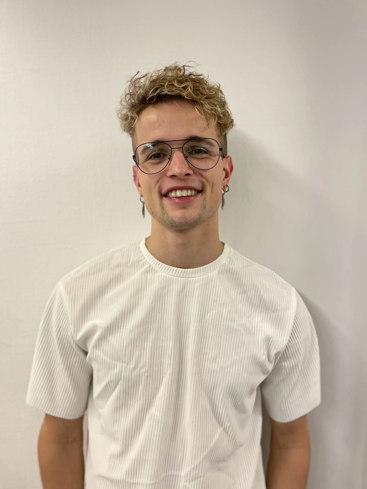
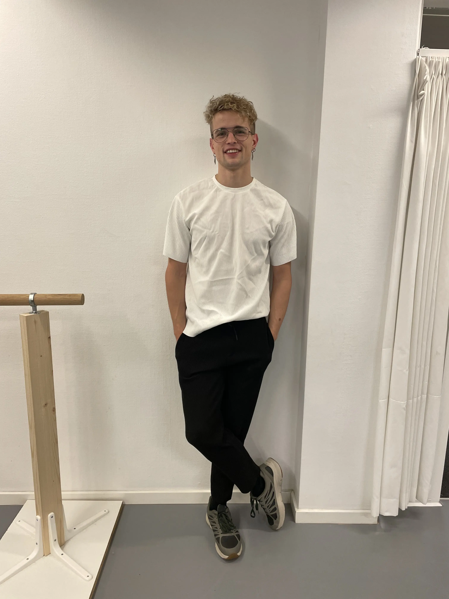
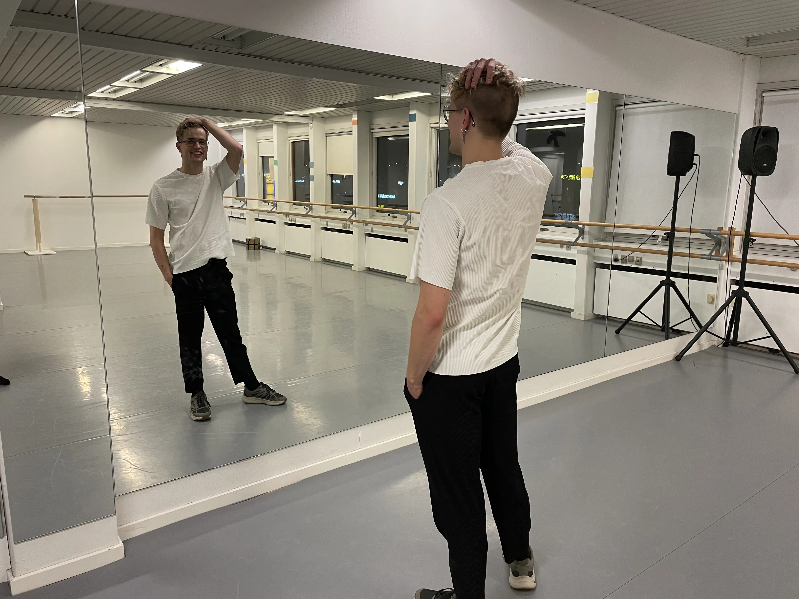

Passionen for dans
Mød:
Michael Sebastian Møller Hammerbo



Hvem er Michael?
Michael er 25 år gammel, har danset i 20 år, bor i Gentofte og har en passion alt inde for dans. Det vil sige alt med at udtrykke sig, stå på en scene, koreografi og træningen op til. Udover at han optræder til mange arrangementer, anledninger, fester osv. er han også underviser inden for dans. Han underviser i både ballet, hiphop og moderne dans.
Michael - En dansers Passion
Her er en lille video om Michael, som fortæller om hvem han er og hans passion.